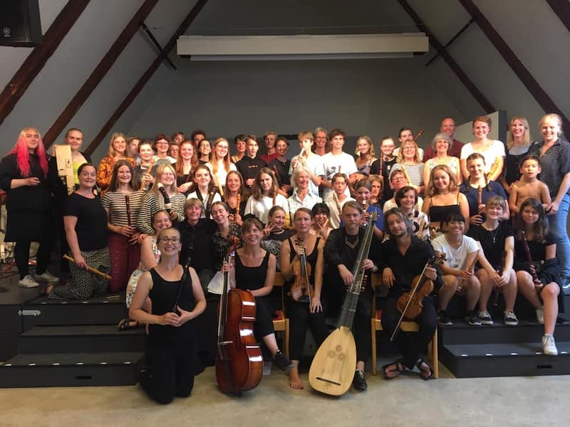
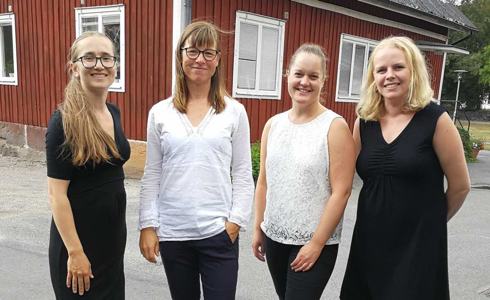

Glimåkra Blockflöjtsdagar 2020 äger rum den 5-9 augusti på vackra Glimåkra Folkhögskola. Ansökan kommer att öppna i mitten av februari.
Dagarna bjuder på ensemblespel, masterclasses, workshops, teknikpass, konserter, bad och lägeraktiviteter, allt på vackra Glimåkra folkhögskola i Göinge. Erfarna blockflöjtister och pedagoger undervisning och inspiration. Sist men inte minst, får man på Glimåkra träffa och spela tillsammans med andra som delar intresset för blockflöjt!
Gästlärare 2020 kommer att vara Cecilia Kjelldén, blockflöjtist och lärare i blockflöjt vid Musikhögskolan i Malmö. Hennes följeslagare Anders Danman, också lärare på Musikhögskolan i Malmö, kommer att ackompanjera solokurslektioner från cembalon.
Vi gästas också av Giovanni-kvartetten som kommer att bjuda på workshop och föreställningen "Giovannikvartetten ger plats - ett möte med Barockens kvinnor".
På Glimåkra Blockflöjtsdagar finns två kurser att välja mellan:
- Ensemblekursen. Denna kurs är för dig som är 12 år eller äldre. Här spelar vi både i stora och små ensembler. Vi vill att du som går denna kurs ska ha viss notläsningsvana.
- Solokursen. Denna är i första hand för dig som går, eller är intresserad av att söka en högre musikutbildning i blockflöjt. Här spelar du kammarmusik samt får lektioner i masterclass-form. Antalet platser är begränsat.

Deltagare 2019
Kostnad 2020 för anmälningsavgift, undervisning, mat och logi i dubbelrum 5 dagar:
- Ensemblekurs - 2750 kr
- Solokurs - 3190 kr
Flautissimos bankkonto i SEB: 5675 33 027 00, ange deltagarens namn på meddelande-raden!
För betalning från utlandet:
IBAN : SE4850000000056753302700
BIC : ESSESESS
Föreningen Flautissimo
Skandinaviska Enskilda Banken
Kontakt: glimakrablockflojtsdagar@gmail.com
På vår sida på Facebook finns foton och klipp från tidigare kurser.

Välkomna till Glimåkra hälsar arrangörerna Annie, Pia, Sofia och Emelie.
Glimåkra Blockflöjtsdagar 2019 genomfördes i samarbete och med stöd av: Musik i Syd, Sparbanksstiftelsen Finn, Riksförbundet Unga Musikanter, Glimåkra Folkhögskola, Helge Ax:son Jonssons stiftelse, Flautissimo, Malmö Stad samt Kulturens bildningsförbund